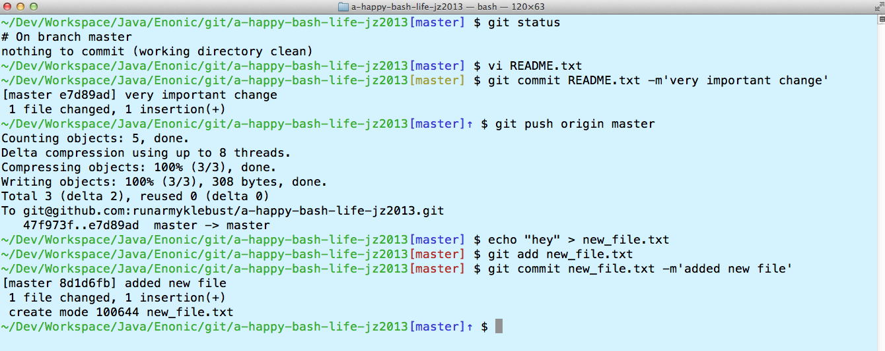
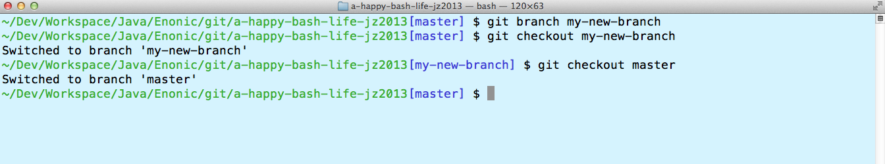

Runar Myklebust
Senior developer@Enonic
https://github.com/runarmyklebust/bashstuff
../git/WEM/modules/wem-webapp/target/wem-webapp-5.0.0-SNAPSHOT/WEB-INF $ cd ..
../git/WEM/modules/wem-webapp/target/wem-webapp-5.0.0-SNAPSHOT $ cd ..
../git/WEM/modules/wem-webapp/target $ cd ..
../git/WEM/modules/wem-webapp $ cd ..
../git/WEM/modules $ cd ..
../git/WEM $
../git/WEM/modules/wem-webapp/target/wem-webapp-5.0.0-SNAPSHOT/WEB-INF $ up 5
../git/WEM $
../git/WEM/modules/wem-webapp/target/wem-webapp-5.0.0-SNAPSHOT/WEB-INF $ up tar
../git/WEM/modules/wem-webapp/target $ up W
../git/WEM $
up() {
LIMIT=$1
if [ -z "$LIMIT" ]; then
LIMIT=1
fi
SEARCHPATH=$PWD
# Non-numeric input, do pattern match
if ! [[ "$LIMIT" =~ ^[0-9]+$ ]] ; then
if ! [[ "$SEARCHPATH" =~ ^.*$LIMIT.*$ ]] ; then
echo "expression not found in path"
else
while [ true ]; do
SEARCHPATH=$SEARCHPATH/..
cd $SEARCHPATH
if [[ ${PWD##*/} =~ ^.*$LIMIT.*$ ]]; then
break;
elif [[ -z ${PWD##*/} ]]; then
break;
fi
done
fi
else
# go LIMIT dirs up
for ((i=1; i <= LIMIT; i++))
do
SEARCHPATH=$SEARCHPATH/..
done
cd $SEARCHPATH
fi
}
Changed, ahead of remote, new

current branch

export PROMPT_COMMAND="set_git_enabled_prompt; $PROMPT_COMMAND"
function set_git_enabled_prompt () {
# Set the BRANCH variable.
if is_git_repository ; then
set_git_branch
else
BRANCH=' '
fi
# Set the bash prompt variable.
PS1="\[\e[$((32-${?}))m\]\w\[\e[0m\]${BRANCH}\$ "
}
# Activate
shopt -s progcomp
# Define function
_set_gitrepository-TC() {
local cur
cur=${COMP_WORDS[COMP_CWORD]}
COMPREPLY=( $( compgen -W '$( ls $GIT_REPO)' $cur ))
}
# Function
cg() {
builtin cd $GIT_REPO/$1
}
# Bind
complete -F _set_gitrepository-TC cg
# Set larger history
HISTSIZE=9000
HISTFILESIZE=$HISTSIZE
# Ignore duplicates and commands with leading spaces
HISTCONTROL=ignorespace:ignoredups
_bash_history_sync() {
# Append this session to history
builtin history -a
HISTFILESIZE=$HISTSIZE
}
export PROMPT_COMMAND="_bash_history_sync; $PROMPT_COMMAND"
https://github.com/runarmyklebust/bashstuff